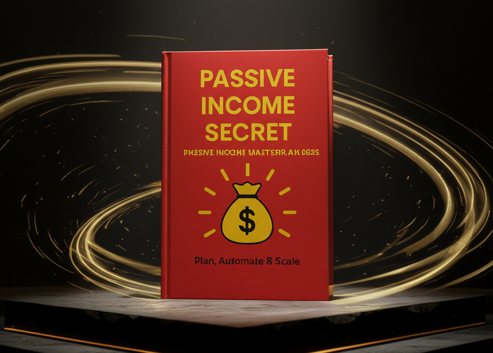

There’s a certain image attached to passive income — money flowing effortlessly while you sleep or travel. It feels like a loophole in the system.
That idea is attractive. It’s also incomplete.
Passive income is not about avoiding work. It’s about changing when and how the work is done. You build something once that continues to generate income later.
The biggest mistake people make is assuming passive income is easy money.
They chase shortcuts, jump between ideas, and expect quick results. When results don’t appear, they think it doesn’t work.
In reality, the failure is not in passive income — it’s in expectations.
Passive income means income not directly tied to your daily effort.
In a job, you must work daily to earn. If you stop, income stops.
In a system, income continues even when you’re not actively involved.
The work hasn’t disappeared — it has moved to the beginning.
Active income feels predictable:
You work → You get paid.
Passive income feels uncertain at first, so people avoid it.
But when income depends on time, it has a limit. You cannot scale beyond your available hours.
Most people think:
“How can I earn more?”
But passive income requires:
“What can I build that earns?”
This is where assets come in — things that generate income without constant effort.
Passive income grows differently.
It starts slow, then grows exponentially through compounding.
Most people quit too early before this growth happens.
Avoiding risk feels safe, but money sitting idle loses value due to inflation.
Passive income is about calculated action — not reckless risk.
Success here comes from:
Consistency, patience, and delayed gratification.
You work today for results that come later.
The process is simple:
Earn → Save → Invest → Build assets → Reinvest
Over time, your income becomes independent of your effort.
Passive income is not a shortcut.
It requires effort, patience, and consistency.
But it changes your life structure — from earning money to building systems that earn for you.
If your income depends only on effort, you must always work.
If your income comes from systems, your role changes — from worker to builder.
That is what passive income truly means.
Not escaping work — but escaping dependence on it.
